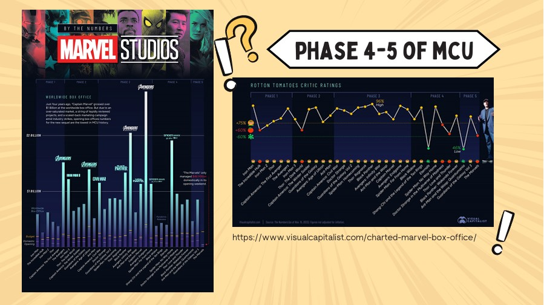

← Back to Other Projects
Marvel Fatigue: จะขอดูต่อหรือพอแค่นี้
Category: Acad-Projects | Type: OTHER PROJECT | Date: 2024

Marvel นั้นอาจเรียกได้ว่าเป็นหนึ่งในภาพยนตร์และสื่อที่มีภาพลักษณ์ที่ชัดเจน แข็งแกร่ง และมีภาพยนตร์ที่กวาดรายได้ทะลุหลักพันล้านเป็นจำนวนมาก แต่ความแข็งแกร่งของ Marvel เองกลับกลายเป็นดาบสองคม เมื่อมันนำมาซึ่งปัญหาที่พวกเขาต้องพยายามหาทางแก้ไขให้ได้ด้วยเช่นกัน
จากจุดเด่นของ Marvel ที่ตัวละครมีเอกลักษณ์และเป็นที่นิยม ทำให้มักมีการเชื่อมโยงตัวละครและเรื่องราวของภาพยนตร์แต่ละเรื่องเข้าด้วยกัน เช่นการร้อยเรียง Infinity Saga ซึ่งเป็นการเชื่อมโยงเรื่องราวของซูเปอร์ฮีโรใน phase ก่อนหน้า ซึ่งบทสรุปของเรื่องราวดังกล่าวอย่าง Avengers: EndGame นั้นกวาดรายได้ไปถึง 2.8 พันล้านดอลลาร์สหรัฐ และอาจกล่าวได้ว่ากลยุทธ์นี้เป็หนึ่งในกลยุทธ์ที่ประสบความสำเร็จเป็นอย่างยิ่ง
ทาง Marvel จึงนำกลยุทธ์นี้มาใช้กับเรื่องราวใน phase ต่อไปอย่าง "Multiverse Saga" อย่างไรก็ตาม กลยุทธ์นี้กลับไม่ได้ประสบความสำเร็จดังเคย

Avengers: Endgame ที่กวาดรายได้สูงสุดของ Marvel ก่อนที่รายได้จะค่อย ๆ ลดลงอย่างเห็นได้ชัดจากภาพยนตร์ช่วง phase ถัดมา
ด้วยความพยายามเข้าไปแข่งขันในด้าน streaming platform ที่มีมาก่อนหน้า ทำให้เรื่องราวในยุคต่อมาของ Marvel อย่าง Multiverse Saga นั้น
ต้องมีการติดตามเรื่องราวทั้งจากในรายการโทรทัศน์ (TV series) และภาพยนตร์ที่ถูกปล่อยออกมาเป็นจำนวนมาก รวมทั้งเนื้อเรื่องก็มีการดำเนินเรื่องให้รวดเร็วและกระชับมากยิ่งขึ้น
กระบวนการผลิตเองก็ต้องใช้เวลาในการผลิตที่รวดเร็วขึ้นตามไปด้วยเพื่อให้เกิดความต่อเนื่อง ซึ่งการผลิตที่รวดเร็วนี้ก็ส่งผลต่อคุณภาพของการผลิตตามไปด้วย
การเปลี่ยนแปลงเหล่านี้ทำให้แฟน ๆ รวมทั้งคนที่สนใจในตัวภาพยนตร์เริ่มเบื่อกับเนื้อหาที่มากจนเกินความจำเป็น และให้ความสนใจกับสื่อของ Marvel น้อยลง
 Ant-Man and The Wasp: Quantumania ซึ่งได้รับคำวิพากษ์วิจารณ์ในแง่ของกระบวนการผลิต และคาดว่าเป็นผลกระทบจากการเร่งผลิตสื่อออกมามากและรวดเร็วเกินไป
อย่างไรก็ตาม ทาง CEO ของ Disney อย่าง Bob Iger ได้พยายามแก้ไขปัญหาดังกล่าวโดยมุ่งเน้นไปที่การชะลอการฉายภาพยนตร์และเพิ่มระยะเวลาในการผลิตให้มากขึ้น
เพื่อให้ได้ผลงานที่มีคุณภาพมากยิ่งขึ้น เขาเชื่อว่าหากผลิตภาพยนตร์ที่มีคุณภาพออกมา ผู้ชมก็จะยังคงสนใจตัวภาพยนตร์ด้วยเอกลักษณ์ที่โดดเด่นและชวนให้ติดตามของเหล่าตัวละครซูเปอร์ฮีโรในท้ายที่สุด
Ant-Man and The Wasp: Quantumania ซึ่งได้รับคำวิพากษ์วิจารณ์ในแง่ของกระบวนการผลิต และคาดว่าเป็นผลกระทบจากการเร่งผลิตสื่อออกมามากและรวดเร็วเกินไป
อย่างไรก็ตาม ทาง CEO ของ Disney อย่าง Bob Iger ได้พยายามแก้ไขปัญหาดังกล่าวโดยมุ่งเน้นไปที่การชะลอการฉายภาพยนตร์และเพิ่มระยะเวลาในการผลิตให้มากขึ้น
เพื่อให้ได้ผลงานที่มีคุณภาพมากยิ่งขึ้น เขาเชื่อว่าหากผลิตภาพยนตร์ที่มีคุณภาพออกมา ผู้ชมก็จะยังคงสนใจตัวภาพยนตร์ด้วยเอกลักษณ์ที่โดดเด่นและชวนให้ติดตามของเหล่าตัวละครซูเปอร์ฮีโรในท้ายที่สุด